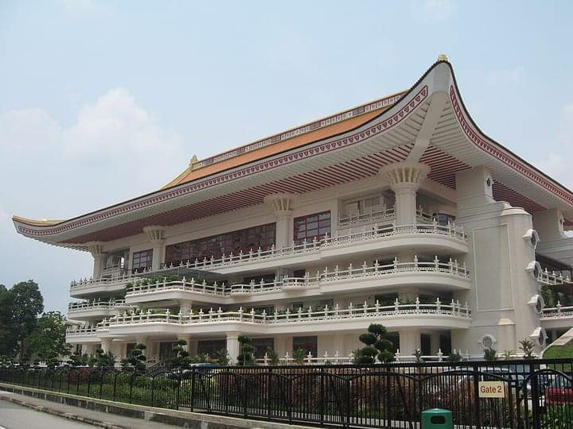

Singapore
Bishan
a town of Singapore — sights & hawker food, sourced
43 places · 1 area · every one sourced, pinned and status-checked · last checked · 2 closed, kept for the record. Ordered by tier, then by number of named sources. How we choose
chicken rice · char kway teow · Kong Meng San Phor Kark See Monastery
Start with Ming Kee Chicken Rice

Start with

Bishan 43 places · area 1 of 1

Photo: Terence Ong · CC BY-SA 3.0 · Wikimedia Commons (resized) 1 Must see within Bishan
Kong Meng San Phor Kark See Monastery
Singapore's largest Buddhist monastery, founded 1920 by Venerable Zhuan Dao on Bright Hill (Kong Meng San). Spread over 800,000 sq ft — roughly 14 football fields — its prayer halls, pagodas, Guanyin statue and the ship-like four-storey Venerable Hong Choon Memorial Hall (housing one of Asia's largest bronze Buddha images, 13.8m and 55 tonnes) make it Bishan's great landmark. Also known as Bright Hill Temple.
Look for Free entry; vegetarian dining hall on site
88 Bright Hill Road, Singapore 574117
Recommended by , ,
-
2 Must see within Bishan · Hainanese chicken rice
Ming Kee Chicken Rice
The stall most synonymous with Bishan — a 40-plus-year institution beside Bishan Bus Interchange whose chicken is plunged into ice water after poaching for a signature gelatinous skin and tender flesh, drawing snaking queues onto its iconic green plates.
Kim San Leng Coffee Shop, Blk 511 Bishan Street 13, S570511
Recommended by , ,
-
3 Must see within Bishan
HSBC TreeTop Walk
The first free-standing suspension bridge of its kind in the region — a 250m span slung 25m high between Bukit Peirce and Bukit Kalang, the two highest points in MacRitchie, for a panoramic view over the rainforest canopy and Upper Peirce Reservoir. A one-way crossing on the wider MacRitchie trail network on Bishan's northern doorstep.
Look for Free; Tue-Sun ~8.30/9am-5pm, closed Mon
MacRitchie / Central Catchment Nature Reserve (nearest access via Venus Drive), Singapore
Recommended by ,
-
4 Must see within Bishan · Bak kut teh
Rong Cheng (Sin Ming Road) Bak Kut Teh
Uncle Lim has served peppery Teochew bak kut teh here since 1976 and pioneered the use of 'dragon ribs' — the 16 largest rib bones in a pig — in a clear, garlicky, pepper-forward broth that made this remote Sin Ming shop a pilgrimage.
Blk 22 Sin Ming Road, #01-355, S570022
Recommended by ,
-
5 Worth the detour within Bishan · Wok noodles
Shi Xiang Ge
Owner Liu Yi Jun was Crystal Jade's La Mian Director for nearly 30 years before opening this humble Shanxi stall atop Bishan Bus Interchange — freshly hand-shaved dao xiao mian and springy la mian in a clear beef-bone broth, plus mala braised-meat noodles.
Bishan Cafeteria, Bishan Bus Interchange (beside Junction 8), Bishan Place, Singapore
Recommended by , , +1,
-
6 Worth the detour within Bishan · Hawker
Two Chefs Eating Place (Sin Ming)
The Sin Ming branch of the famed Two Chefs zi char, in a three-storey building in the estate — its signature butter pork ribs are fried crisp and tender then dusted with a slow-cooked butter-milk powder that eats like cereal prawns; other stars include cereal prawn, drunken cockles and coffee pork ribs.
Blk 409 Sin Ming Avenue, S570409
Recommended by , , +1,
-
7 Worth the detour within Bishan
Bishan Public Library
An architectural landmark by LOOK Architects (opened 2006) conceived as a 'tree house' — 16 brightly coloured pods jut from the facade as suspended reading alcoves, with skylights and coloured glass washing the interior in shifting light. Won Singapore's President's Design Award in 2007 and an International Architecture Award in 2009.
Look for Free; closed Mondays (check NLB hours)
5 Bishan Place, #01-01, Singapore 579841
Recommended by , ,
-
8 Worth the detour within Bishan · Hawker
Yang Ming Seafood
The Bishan zi char hotspot that takes over the whole coffeeshop at dinner — its lobster chee cheong fun (silky rice rolls under tender lobster and savoury sauce) won the SPH Food Masters award in 2020; the salt-baked crab is the other must-order.
Blk 150 Bishan Street 11, S570150
Recommended by , ,
-
9 Worth the detour within Bishan · Hainanese chicken rice
Leong Hainanese Chicken Rice
A Shunfu Mart mainstay plating a classic $3.90 Hainanese chicken rice with succulent poached chicken and fragrant, faintly crusty rice — a fixture on every guide to the recently renovated hawker centre.
Shunfu Mart Food Centre, Blk 320 Shunfu Road, S570320
Recommended by , ,
-
10 Worth the detour within Bishan · Wok noodles
Lai Heng Fried Kuay Teow
A long-queuing Shunfu char kway teow stall dishing generous $3 plates of sweet-savoury noodles studded with fresh cockles — one of the food centre's most popular names across post-renovation guides.
Shunfu Mart Food Centre, #02-20, Blk 320 Shunfu Road, S570320
Recommended by , ,
-
11 Worth the detour within Bishan · Indian
Chindamani Indian Restaurant
A hawker-priced Indian stall that draws steady queues to KPT coffeeshop — its prata dough is kneaded well and cooked thinner and crispier than most, and the $6 chicken biryani comes loaded with a huge, fall-apart curry chicken leg; a shorter-queue alternative to the famous Serangoon North branch.
KPT Coffeeshop, Blk 284 Bishan Street 22, S570284
Recommended by , ,
-
12 Worth the detour within Bishan · Hawker
Jiak Mee
A mee hoon kueh stall run by three 20-year-old friends above Bishan Bus Interchange, hand-tearing dough to order — soupy or dry ban mian, you mian and ee mian with al-dente noodle pieces, minced pork, ikan bilis and a sweet dark sauce; a young-hawker story covered across the food press.
Bishan Cafeteria, 514 Bishan Street 13, #02-494, S570514
Recommended by , ,
-
13 Worth the detour within Bishan · Kaya toast
Sen Yen Charcoal Traditional Toast
Old-school charcoal-grilled kaya toast in the same Sin Ming kopitiam as Sin Ming Roti Prata — thick, fluffy white loaves toasted over charcoal for a characteristic char, layered with kaya and butter at about $1.20; a Sin Ming breakfast institution.
Jin Fa (Gim Huat) Kopitiam, 24 Sin Ming Road, #01-51, S570024
Recommended by , ,
-
14 Worth the detour within Bishan · Chinese
Hup Seng Duck Rice
A Sin Ming braised-duck stall with lunchtime queues among the oldest HDB blocks in the estate — tender Teochew-braised duck with a nice layer of fat under a light-but-savoury dark herbal sauce, best paired with the salted-vegetable duck soup, from about $4.50.
Blk 22 Sin Ming Road, Sin Ming Ville, S570022
Recommended by , ,
-
15 Worth the detour within Bishan
MacRitchie Reservoir Park
Singapore's oldest reservoir (1868) fringed by a much-loved park on the edge of the Central Catchment — a boardwalk hugging the water, kayaking, the Chemperai and Prunus trails and a 20km network of nature paths leading to the TreeTop Walk. The green lung directly north of Bishan and Sin Ming.
Look for Open daily, free
Lornie Road, Singapore 298717
Recommended by ,
-
16 Worth the detour within Bishan
Kwong Wai Siew Peck San Theng
The Cantonese-Hakka cemetery, founded 1870, that gave Bishan its name — 'Peck San Theng' (碧山亭, 'pavilions on the jade hill') became Mandarin 'Bishan'. Once one of Singapore's biggest Chinese cemeteries at 324 acres, it was exhumed from 1982 and rebuilt as a columbarium and preserved ancestral temple; a Heritage Gallery opened in 2018 telling its 150-year story.
Look for Temple grounds open daily; heritage gallery free
12 Sin Ming Road, Singapore 575627
Recommended by ,
-
17 Worth the detour within Bishan · Chinese
Mei Zhen Hakka Delicacies
Run by the Toh sisters since the 1980s, this Shunfu stall makes suan pan zi (abacus seeds) with a texture like no other — chewy yam-and-flour discs stir-fried with dried shrimp, minced pork, mushroom and crispy shallots, a hard-to-find Hakka classic.
Shunfu Mart Food Centre, #02-26, Blk 320 Shunfu Road, S570320
Recommended by ,
-
18 Worth the detour within Bishan · Wok noodles
Sin Kian Heng
A decades-old Sin Ming heartland stall whose twist is its fishballs — bought fresh daily then fried in the stall's own special oil for a light, springy, browned bite — served over minced-pork noodles with optional braised trotter and intestines.
Gourmet Street Coffeeshop, Blk 22 Sin Ming Road, S570022
Recommended by ,
-
19 Worth the detour within Bishan · Chinese
284 Kway Chap
One of Bishan's oldest hawker stalls and a cult supper spot — opening in the evening and running into the small hours, its flat rice sheets come with a glossy braise of clean-tasting pig offal that keeps a queue going past midnight.
Blk 284 Bishan Street 22, Singapore S570284
Recommended by ,
-
20 Worth the detour within Bishan · Indonesian
Uncle Penyet (Bishan)
The Bishan outlet of the well-loved Uncle Penyet chain, tucked into the same Kim San Leng coffeeshop as Ming Kee — a hearty halal plate of crispy-yet-juicy smashed fried chicken over rice with deep-fried tau kwa, greens and a punchy belacan sambal.
Kim San Leng Coffee Shop, Blk 511 Bishan Street 13, S570511
Recommended by ,
-
21 Worth the detour within Bishan · Wok noodles
Dong Nan Wanton Noodle
A Shunfu Mart corner stall with no English sign but a constant queue — Malaysian-style dark-sauce wanton mee from $3.50, its springy noodles cooled in cold water before a return to hot, crowned with thick slices of tender char siew; named among Daniel Food Diary's best wanton mee in Singapore.
Shunfu Mart Food Centre, Blk 320 Shunfu Road, S570320
Recommended by ,
-
22 Deep cut within Bishan
Bishan ActiveSG Stadium & Sports Centre
Bishan's public sports hub, run by Sport Singapore's ActiveSG, built around a stadium (opened 1998) with a professional running track that is the main home ground of Singapore Premier League club Lion City Sailors (formerly Home United). The wider centre adds a sports hall, clubhouse courts, swimming pool and a YouthCreates skate spot beside Bishan-AMK Park.
Look for Public sessions daily; stadium track free when open
7 Bishan Street 14, Singapore 579784
Recommended by , ,
-
23 Deep cut within Bishan
Old Upper Thomson Road (former Grand Prix circuit)
The quiet, tree-lined loop on Bishan's northern doorstep that was Singapore's most notorious motor-racing venue — the ~4.9km Thomson Road street circuit hosted the Singapore Grand Prix from 1961 to 1973, with legendary corners named Devil's Bend, The Snakes and Murder Mile. Once lined with kampongs, parts of the old route now thread Thomson Nature Park and skirt Lower Peirce.
Look for Public road / park connector, open daily, free
Old Upper Thomson Road, Singapore
Recommended by , ,
-
24 Deep cut within Bishan · Chendol
Chocolat N' Spice
An ex-hotel pastry chef bakes large, moist, fragrant muffins from around $1.50-$2.20 at this Shunfu stall — the Blueberry and Coffee Walnut draw consistent lines, a rare hawker-priced bakery gem.
Shunfu Mart Food Centre, Blk 320 Shunfu Road, S570320
Recommended by , ,
How we choose
Every place is recommended by named sources (review-aggregator star ratings never count as the recommender), pinned to its door from a published coordinate, and status-checked. Closed places stay, flagged, so you know they’re gone.
- Must see
- The places to plan a visit around — graded within each area, not across the city.
- Worth the detour
- Strong picks, worth going out of your way for.
- Deep cut
- For the curious: smaller, odder, more local.
Within each area, places are ordered by tier, then by number of named sources — never by popularity. Numbers on the cards match the pins on the map. No ratings, prices or opening hours are shown, because the guide doesn’t hold verified ones.
10 sights and 33 places to eat in Bishan, a town of Singapore, each traceable to the source that named it (Michelin, local news & vetted local/viral creators). Renders in soft pastel, light or dark.
Take Bishan with you
Every place, its sources, the Guidebook and the photos at a small size. Map tiles are not saved: offline, the map shows our own pin schematic and every place stays listed.